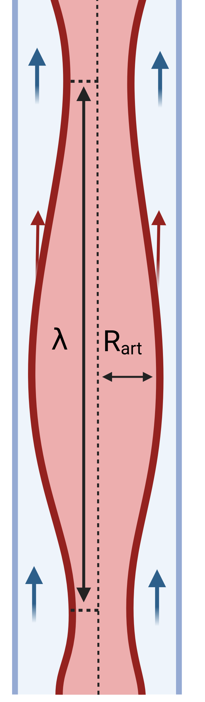
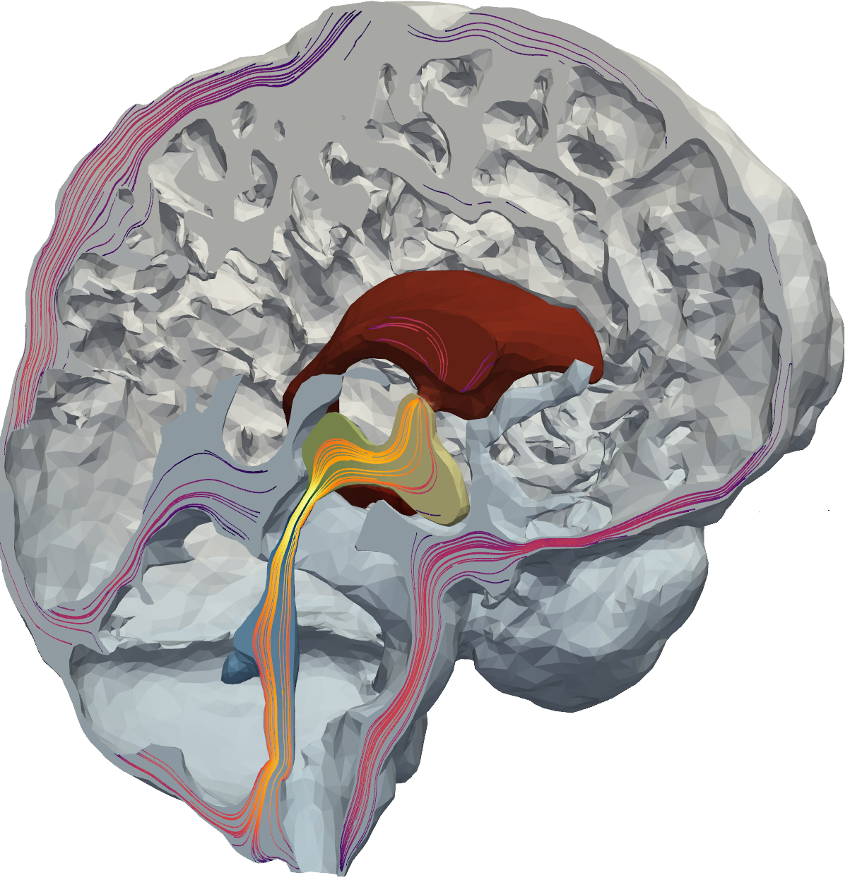

<html lang="en">
    <head>
        <meta charset="UTF-8">
        <meta name="viewport" content="width=device-width, initial-scale=1.0">
        <title>Figure 3</title>
        <style>
        @page {
            size: A4;
            margin: 1cm;
        }

        body {
            font-family: Arial, sans-serif;
        }

        h5 {
            color: black;
            text-align: center;
            font-size: 9pt;
            font-family: Helvetica;
        }
        h4 {
            color: black;
            text-align: left;
            font-size: 8pt;
            font-family: Helvetica;
        }

        p {
            font-family: "Arial";
            text-align: center;
            font-size: 7pt;
            font-weight: normal;
        }
    </style>
    </head>
</html>






<p style="position:absolute;left:639px;top:12px;width:171px;height:20px;">pressure-driven flow</p>
<p style="position:absolute;left:639px;top:133px;width:171px;height:20px;">cardiac-driven flow</p>
<p style="position:absolute;left:639px;top:260px;width:171px;height:20px;">vasomotion-driven flow</p>
<h3 style="position:absolute;left:11px;top:8px;width:22px;height:21px;">A</h3>
<h3 style="position:absolute;left:499px;top:5px;width:22px;height:21px;">B</h3>
<h3 style="position:absolute;left:499px;top:124px;width:22px;height:21px;">C</h3>
<h3 style="position:absolute;left:587px;top:123px;width:22px;height:21px;">D</h3>
<h3 style="position:absolute;left:587px;top:249px;width:22px;height:21px;">E</h3>